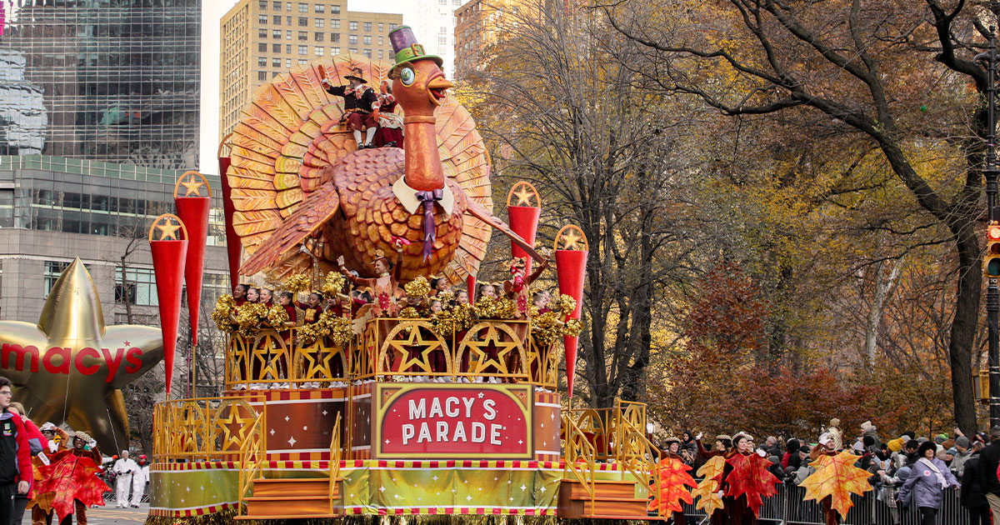

This edition of the Thanksgiving Chronicles can be best viewed on a laptop or chromebook.
Prologue
🦃 Welcome, one and all, to the first-ever thematical edition of the Thanksgiving Chronicles! Here, we will be exploring numerous aspects of the Macy's Thanksgiving Parade, like its history, insights from others, and what to look forward to this year. But before, our editors have added a few feature segments based on what is Thanksgiving and a few hilarious and mind-boggling puzzles and comics.
🍂 But before you start reading (or skimming...), here are some Thanksgiving wishes from our editors.
May this day remind us to be thankful for all that we have. - Pecan Pie-rates
We are so thankful to have you in our lives and wish you a Thanksgiving full of love and blessings. - Mashed Potato Mafia
Hope you have a wonderful Thanksgiving! - Stuffing McGee
May your dinner table is filled with light (and turkey) - Garich Mahotrapa
May all the good things of life be yours, not only at Thanksgiving but throughout the coming year. - Stuffed Turkeys
Until the next prologue, have a happy Thanksgiving!
What is Thanksgiving?
Most Americans are familiar with the Pilgrim's Thanksgiving Feast of 1621, but few realize that it was not the first festival of its kind in North America. Long before Europeans set foot in the Americas, native peoples sought to insure a good harvest with dances and rituals such as the Green Corn Dance of the Cherokees.
The first Thanksgiving service known to be held by Europeans in North America occurred on May 27, 1578, in Newfoundland, although earlier Church-type services were probably held by Spaniards in La Florida. However, for British New England, some historians believe that the Popham Colony in Maine conducted a Thanksgiving service in 1607 (see Sources: Greif, 208-209; Gould, and Hatch). In the same year, Jamestown colonists gave thanks for their safe arrival, and another service was held in 1610 when a supply ship arrived after a harsh winter. Berkley Hundred settlers held a Thanksgiving service in accordance with their charter which stated that the day of their arrival in Virginia should be observed yearly as a day of Thanksgiving, but within a few years an Indian uprising ended further services (Dabney). Thus British colonists held several Thanksgiving services in America before the Pilgrim's celebration in 1621.
The Pilgrims, with a puritanical rejection of public religious display, held a non-religious Thanksgiving feast, aside from saying grace. In fact, they seem to have used the three days for feasting, playing games, and even drinking liquor.
In 1623, the Pilgrims at Plymouth Plantation, Massachusetts, held another day of Thanksgiving. As a drought was destroying their crops, colonists prayed and fasted for relief; the rains came a few days later. And not long after, Captain Miles Standish arrived with staples and news that a Dutch supply ship was on its way. Because of all this good fortune, colonists held a day of Thanksgiving and prayer on June 30. This 1623 festival appears to have been the origin of our Thanksgiving Day because it combined a religious and social celebration.
Festivals of Thanksgiving were observed sporadically on a local level for more than 150 years. They tended to be autumn harvest celebrations. But in 1789, Elias Boudinot, New Jersey, member of the House of Representatives, moved that a day of Thanksgiving be held to thank God for giving the American people the opportunity to create a Constitution to preserve their hard won freedoms. A Congressional Joint Committee approved the motion, and informed President George Washington. On October 3, 1789, the President proclaimed that the people of the United States observe "a day of public thanksgiving and prayer" on Thursday, the 26th of November.
The next three Presidents proclaimed, at most, two days of thanksgiving sometime during their terms of office, either on their own initiative or at the request of a joint Resolution of Congress. One exception was Thomas Jefferson, who believed it was a conflict of church and state to require the American people hold a day of prayer and thanksgiving. President James Madison proclaimed a day of Thanksgiving to be held on April 13, 1815, the last such proclamation issued by a President until Abraham Lincoln did so in 1862.
Most of the credit for the establishment of an annual Thanksgiving holiday may be given to Sarah Josepha Hale. Editor of Ladies Magazine and Godey's Lady's Book, she began to agitate for such a day in 1827 by printing articles in the magazines. She also published stories and recipes, and wrote scores of letters to governors, senators, and presidents. After 36 years of crusading, she won her battle. On October 3, 1863, buoyed by the Union victory at Gettysburg, President Lincoln proclaimed that November 26, would be a national Thanksgiving Day, to be observed every year on the fourth Thursday of November.
Every year, tens of millions of people tune in to the Macy’s Thanksgiving Day Parade to kick off their holiday.
It’s become a non-negotiable Thanksgiving tradition for so many Americans, but most of them probably don’t know that the famous parade originally started because immigrants wanted a taste of home.
Today, it’s three miles of pure American chaos, in the best way possible. But how did it evolve into what it is now?

1924 marked the first iteration of the parade — which, at the time, was called the Macy’s Christmas Parade. It featured live animals from the Central Park Zoo and Macy’s employees dressed in festive costumes.
The live animals didn’t really work out, so in 1927 the first giant balloon, Felix the Cat, was rolled out.
Mickey Mouse made his parade debut in 1934, which was the start of a big partnership with Disney.
Between 1942 and 1944, the parade was not held due to the ongoing World War II. The rubber and helium that would’ve been used for the balloons was instead donated to the war effort. In 1945, the festivities were back on, and the parade resumed, gaining national attention.
Then, in 1946, the beginning of an exciting era: The parade was televised for the first time — just locally, but it was still a big deal. The following year the parade was nationally broadcast by NBC, which solidified the Thanksgiving tradition.
Today, the Macy’s Thanksgiving Day Parade is one of the most-watched annual events in the U.S. — a mix of giant character balloons, floats, marching bands, and performances broadcast nationwide to bring holiday joy to all.
Here are some insights of the Macy's Thanksgiving Parade behind the scenes and during previous parades.
I’ve only been a spectator at the Macy's Thanksgiving Day Parade once, when I was a teenager. My memories of the day include our view from the TKTS booth in Times Square, and how early we had to get there to secure our spot. I considered how many layers to wear—not enough, apparently, since I spent the morning huddled next to my cousin for warmth. What I did not contemplate, however, was how the floats themselves got there, who made them, how they were designed, and what they were made of. They just appeared in front of me, like magic.
The answers to all these questions lie in an 80,000-square-foot warehouse in Moonachie, New Jersey, which I was lucky enough to visit this year. I walked in, past vintage pieces of floats from the parade’s history—giant sculptures of a phonograph, a toy train, a moon with a face, and many others—to see what’s in store for 2026.
This year sees the debut of six new floats and four new featured character balloons, and each one started as a glimmer of an idea—or a few, in fact. Macy’s comes up with between two and five concepts for each float. Once a concept is selected, it’s tested out in a small model, especially if there are tricky parts to work out.
For example, this year the new Holland America Line float has an entire kinetic sculpture on it, the largest in the parade’s history; slats move up and down to look like Alaska’s waterways, complete with salmon jumping from the stream. The designers had to test it on a model first to ensure the concept was viable.
One of the most exciting new floats is the one celebrating the final season of Netflix’s Stranger Things, which will highlight one of the show’s central characters: an eight-and-a-half-foot-tall Demogorgon with a tooth-studded mouth that can open and close and an armature on the inside so it can move its spindly limbs. “It’s a unique piece,” says Will Coss, the executive producer of Macy’s Thanksgiving Day Parade. “We’re really excited to bring this kind of dynamic puppetry into our world.”
You can look forward to six new floats, including the "Stranger Things" themed "Upside Down Invasion" and the LEGO "Brick-tastic Winter Mountain". A star-studded lineup of performers will be featured, including Busta Rhymes, Ciara, and Debbie Gibson, alongside classic balloons like Rainbow and Greybow Trouts, and new ones like Shrek's Onion Carriage and Mario. The 2.5-mile route will also include a variety of marching bands and the return of legacy balloons from Macy's archives
New Floats and Balloons
Six new floats: "Upside Down Invasion: Stranger Things" (Netflix), "Brick-tastic Winter Mountain" (LEGO), "Master Chocolatier Ballroom" (Lindt), "The Counting Sheep's Dream Generator" (Serta), "Friends-giving in POPCITY" (Pop Mart), and "The Land of Glaciers, Wildlife & Wonder" (Holland America Line).
New balloons: Shrek's Onion Carriage, Buzz Lightyear, Mario, and Pac-Man.
Returning legacy balloons: Rainbow and Greybow Trouts, Happy Hippo Triple Stack, Wigglefoot, and Freida the Dachshund.
Celebrity Performances
Musical artists: Expect a variety of performers, such as Ciara, Foreigner, Kool & the Gang, Matteo Bocelli, Darlene Love, and Busta Rhymes.
Broadway and TV stars: The lineup also includes actors like Christopher Jackson, Meg Donnelly, and Taylor Momsen.
Special performances: The Radio City Rockettes will perform, and there will be a special appearance by the New York Police Department's marching band.
Learn more about the Macy's Thanksgiving Parade, including highlights, behind-the-scenes, and more at the official webiste itself: https://www.macys.com/s/parade/.
For a deeper dive into the history, Wikipedia offers a comprehensive overview, while NBC and other news outlets provide current information on performers, floats, and how to watch live or stream the event. You can also watch a special preview show the night before, or watch a behind-the-scenes video about the balloons.